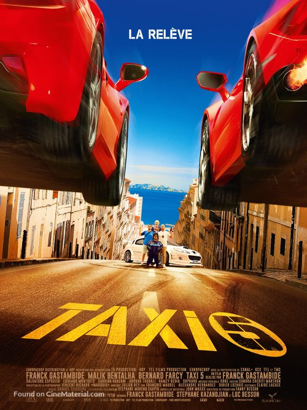
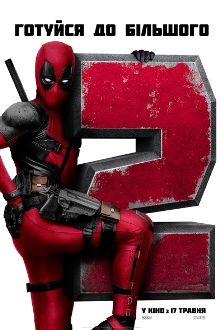

- Такси 5

Сюжет
Сільвена Маро, відчайдушного паризького копа та першокласного гонщика, проти його волі переводять до місцевого поліцейського відділку у Марселі.
Колишній шеф поліції Жибер, діючий мер міста із рекордно низьким рейтингом, дає Сільвену завдання — знешкодити жахливу банду італійців на гоночних
Ferrari, яка грабує ювелірні крамниці.Аби виконати завдання, Маро не має іншого вибору, окрім як взяти у напарники Едді Маклуфа, племінника
знаменитого Даніеля.Той, хоч ї є найгіршим водієм у Марселі, єдиний має доступ до легендарного білого Таксі.
- Дедпул 2
/

Сюжет
Супергерой Дедпул, він же Вейд Вілсон, жаліється на життя, останнiм згадуючи, що Росомаха теж осилив рейтинг для
дорослих і загинув. Він підриває себе на бочках із пальним і поза кадром розповідає що привело його до цього вчинку.
За шість тижнів до того Дедпул убиває різноманітних злочинців. У річницю спільного життя зі своєю нареченою Ванессою
він дізнається, що Ванесса хоче від нього дитину. Того ж дня йому не вдається знищити чергового злочинця Сергія
Валишнікова, який вночі з найманцями вривається до житла Вілсона. Дедпул знищує нападників, та Валишніков застрелює
Ванессу. Вейд винить себе в смерті нареченої і намагається вчинити самогубство, підірвавшись на бочках з пальним. Він
бачить видіння Ванесси, котра говорить, що у Вейда «серце не на місці». Мутант Колос знаходить рештки його тіла і
складає докупи. Вейд регенерує і отямлюється у школі професора Ксав'єра. Колос закликає знайти родину серед «Людей X»
i зачитує Дедпулу моралiзаторськi повчання.
Дедпул, Колос і Надзвукова Боєголовка вирушають владнати інцидент з юним мутантом Расселом Коллінзом, який керує
вогнем і втік з притулку для дітей-мутантів. Вейд допомагає нейтралізувати Рассела, та коли той розповідає, що з нього
знущалися, застрелює робітників притулку. Колос зупиняє його, і Вейда заарештовують. Разом з Расселом його
доставляють у спеціальних нашийниках, які пригнічують надлюдські здатності, до в'язниці «Морозилки» для злочинців-мутантів.
Тим часом солдат-кіборг з майбутнього Кейбл вирушає в минуле, щоб помститися за родину, вбиту дорослим Коллінзом.
Рассел хоче здобути авторитет серед в'язнів і планує втечу. Кейбл вривається до в'язниці в пошуках Коллінза.
Скориставшись нападом, мутанти тікають з камер. Вейд, захищаючи Рассела, ламає свій нашийник і дає кіборгу відсіч.
В ході сутички він пробовкується, що йому начхати на Рассела, що чує хлопець. Дедпул виривається з «Морозилки» і знову
бачить видіння Ванесси. Він розуміє її слова так, що повинен піклуватися про Рассела.
Дедпул збирає команду мутантів під назвою «Сила Ікс», щоб витягнути Рассела з в'язниці і захистити його від Кейбла.
Команда атакує конвой з в'язнями, але всі члени «Сили Ікс», за винятком Дедпула і Доміно, якій завжди щастить, швидко
гинуть безглуздими смертями. Дедпул не вірить, що здібності Доміно реальні, та вона завдяки неймовірному збігу обставин
захоплює конвой. Кейбл намагається вбити Рассела, Дедпул з боєм захищає його. Рассел тікає з конвою і звільняє мутанта
Джаґернаута, котрого хлопчик вважає за кращого друга, нiж Дедпул. Джаґернаут відриває Дедпулу ноги i Домiно доставляє
його додому відрощувати кінцівки.
Кейбл розшукує Дедпула і повідомляє, що невдовзі Рассел уб'є директора свого притулку, що перетворить його на
серійного злочинця. Тому кіборг пропонує Вейду і Доміно співпрацювати, щоб завадити першому вбивству Коллінза. Він
погоджується дати Вілсону шанс умовити Рассела перед тим, як знищить його.
Колос вирішує все ж допомогти Дедпулу, затримавши Джаґернаута, щоб Вілсон і Кейбл могли завадити Коллінзу в
притулку. Дедпулу не вдається вмовити Коллінза не вбивати директора і тоді Кейбл стріляє в мутанта. Вілсон закриває
собою хлопчика та гине. Вражений самопожертвою, Рассел вирішує не вбивати директора. Це змінює майбутнє, в якому
сім'я Кейбла жива. В подяку Кейбл використовує останній заряд своєї машини часу, щоб стрибнути на кілька хвилин у
минуле і помістити жетон Ванесси перед серцем Вейда. Завдяки цьому Дедпул виживає, та директора збиває таксист Допіндер.